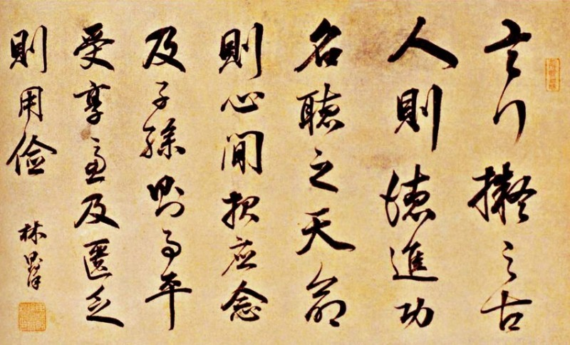
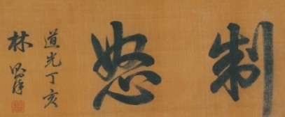
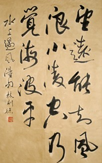
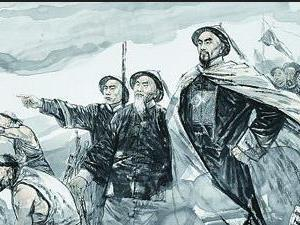
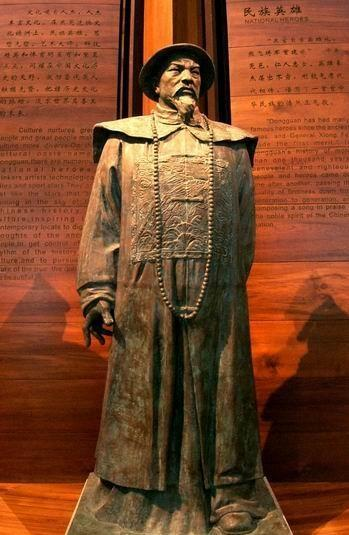

Related pictures
- 
- 
- 
the unprecedented invasion of the powerful enemy of western capitalism prompted Lin zexu to "wake up first from the lethargy of feudal isolation and open his eyes to the world with a brand-new attitude". After Lin Zexu went to Guangzhou to preside over the ban on smoking, he realized his lack of knowledge of the West and his ignorance of the world outside the dynasty in his struggle against the invaders. He was eager to change the situation that "the coastal civil and military officials did not know all the foreign things and were shocked by the English name but did not know the origin". He began to consciously and purposefully collect foreign newspapers and books for translation in order to obtain valuable information and deepen the understanding of the "Western" by the court and the Chinese.
by analyzing foreign political, legal, military, economic and cultural situations, he realized that only by learning from western countries can he resist foreign aggression.
he put forward the opinion that in order to change the backward state of military technology, artillery and shipbuilding should be made. He personally presided over and organized a translation team to translate foreign books and periodicals, and translated the remarks of foreigners about China into "Chinese Affairs and Foreign Languages" as "reference news" for Chinese officials at that time. In order to understand foreign military, political and economic intelligence, Guangzhou Weekly, sponsored by British businessmen, was translated into Macao News. In order to understand the geography, history and politics of the west and introduce the situation of all countries in the world systematically, we also organized the translation of the British Murray's "world geography book" and compiled it into "four continents chronicle"; Adapting to the needs of the struggle against the enemy and foreign negotiations at that time, he quickly compiled "International Law". This is an epoch-making event in the history of China's international law: it marks the beginning of the formal introduction of western international law works into China, the beginning of the application of modern international law to foreign negotiations in China, and the beginning of the history of China's modern international law. Theoretically, Lin Zexu was the first person to introduce international law to China, the forerunner of China's modern diplomatic career, and the pioneer of China's international law.
Lin zexu is not only a great national hero in the history of our country, but also an excellent water control expert. in his official career, Lin zexu attached great importance to and made great efforts to organize water conservancy projects, such as the seawall in Zhejiang and Shanghai, the major rivers in Taihu lake basin and other water conservancy projects, as well as the canal, yellow river and Yangtze river. Lin Zexu's thought of "valuing the people" is reflected in his emphasis on in-depth practice, hands-on work and relief of the poor. Lin Zexu once wrote "Beizhi Water Conservancy Book". Apart from economy, Beizhi Water Conservancy Book also has water control strategies. Later, Lin Zexu's student Feng Guifen adapted Beizhi Water Conservancy Book into Jifu Water Conservancy Conference.
in the eleventh year of Daoguang, on November 22 (December 25, 1831), Lin zexu was promoted to governor of the east river. Upon arrival, Lin zexu immediately repaired his knowledge of water control, inspected and urged river workers, maintained the quality, and punished officials who had failed to do their work. he ordered the inspection of river bank material piles. in the memorial presented to emperor Daoguang, he said: "Zhou Li Lu Kan always travels through each pile, measuring its height and width, measuring its length one by one, comparing its old and new situations with its new ones, drawing loose when in doubt, tearing apart when in doubt, weighing in bundles according to bundles, weighing in pounds according to bundles, weighing in every bundle, and dismantling in every hall."
Lin zexu did things so seriously that corrupt officials could not cheat. when Tao Xun came, both sides of the strait were safe and sound. Daoguang emperor praised them many times. When Lin Zexu's knowledge and experience in water control became more and more abundant, the poet Zhang Jiliang proposed to Lin Zexu to divert the Yellow River from Lijin, Shandong to the sea. Lin Zexu felt the same way, but public opinion and officials were opposed to the strategy of harnessing the river. Moreover, Lin Zexu could not monopolize the overall situation, and Zhang Jiliang's proposal was rejected. Until shortly before Lin Zexu's death, Zhang Jiliang's strategy of harnessing the river was right. After Lin Zexu's death, in 1855, the Yellow River changed its course and entered the sea from Daqinghe to Lijin.
in July of the 26th year of Daoguang, when Lin zexu was appointed governor of Shaanxi, he wrote to the emperor, declaring that Shaanxi "is adjacent to Shanxi and Henan in the northeast, Sichuan and Gansu in the southwest, and the roads are different, so it is easy for criminals to come and go. If a bandit wields a lethal weapon, he will be the most victimized by the people. He also expressed his determination to take "eliminating violence and ensuring peace" and "strictly arresting and arresting places in order to find peace" as the "first task" after taking over as governor of Shaanxi. At that time, militia activities were mainly in Guanzhong region, especially in Weinan, Fuping, Dali and Pucheng. They "have a nest to hide in and equipment to resist". Therefore, "not only military service to avoid its fierce front", that is, state and county camp members also "cherish the expense and fear the labor" and "flinch". After taking office, Lin Zexu's so-called "occlusion" of local officials' military prowess was first "to analyze and enlighten, to make every effort to break down" and to enhance their courage and confidence in "seizing bandits". Then, he started from Weinan swordsmen with the "horse biting and correcting the case of seizing and committing injuries". The case originally took place in May and June. After Lin took over in July and August, he "proposed to study the matter personally". In addition to sentencing the first offender Ma De to ridicule and to "execute the law on the spot", he banished the saboteurs Zhao Enke and Shi Shuanger, "regardless of the first step, and sent smoke and malaria to the extreme of Yunnan, Guizhou and Guangdong." By the end of this year, Lin Zexu had actively supervised the suppression, and another 146 people had been seized in various counties in eastern Guanzhong and Ansai and other counties in northern Shaanxi. Among them, 46 people who were clearly called "knife bandits" were severely punished. For Lin Zexu's active suppression of swordsmen, Daoguang Emperor Zhu Pi "did a very good job" and greatly appreciated it.
Lin zexu "traveled 30,000 miles across the western regions" from Yili to various parts of Xinjiang in spite of his age and decline. he made a field survey of eight cities in southern Xinjiang, deepening his understanding of the importance of the northwest frontier defense. Lin Zexu discovered Russia's threat to China in the translated materials, which contributed to his defense thoughts against Britain and Russia and became the pioneer of the modern "anti-plug theory". So he explicitly proposed to Ili General Buyantai the "war of wasteland cultivation" to be prepared for any danger. He also led the masses to build water conservancy projects and promote karez and spinning wheels. in memory of his achievements, people called him "Lin gongjing" and "Lin bus". Lin Zexu pointed out the seriousness of Russia's threat based on his years of investigation in Xinjiang and Russia's intimidation of the Qing government to open Yili at that time. When he was dying, Lin Zexu cried out loudly and warned his countrymen: "He will eventually be a Chinese patient, but his Russia! I am too old for you to see. " Sure enough, more than 60 years later, millions of territories have been encroached upon, and history has proved Lin Zexu to be right!
on March 10, 1839, Lin zexu, an imperial envoy, arrived in Guangzhou to ban opium. In the process of banning opium in Guangzhou, Lin Zexu realized that the British colonists refused to give up the criminal opium trade and planned to invade China by force. In order to resist opium invasion and defeat the enemy, he carried out a large number of military reform practices of "learning from the enemy's skills to control the enemy".
On the military side, he set out to strengthen and improve the defense forces along the coast. Special personnel were sent to secretly purchase more than 200 new cannons from foreign countries to install on Haikou battery. In order to improve the military technology, we have also collected and organized data such as cannon aiming method and warship books. Although Lin Zexu had a superficial understanding of the West and the purpose of contacting the West was for diplomatic and military needs, he started the trend of studying and studying the West in modern China and played an enlightening role in China's modern reform thought.
Lin zexu regards the western countries' "warships manufacturing, firearms manufacturing and soldiers training" as an important part of the search for military reform. Officers and soldiers were organized to learn how to drill western weapons and learn western methods in the east field (now around the people's stadium in Guangdong province). they often went to watch exercises and pay close attention to training officers and soldiers. He also joined Guangdong Governor Deng Tingzhen, Guangdong Navy Commander Guan Tianpei, Guangdong Governor Yiliang and other officials in inspecting the troops in the eastern battlefield to prepare for the attack on the British invaders. At that time, hundreds of selected officers and soldiers rehearsed their guns, artillery, etc., which Lin Zexu greatly appreciated. In order to encourage officers and soldiers' patriotism and sense of responsibility, Lin Zexu immediately wrote a new pair of couplets and hung them in the arms drill hall in Dongchang.
couplet says: "when the team leaves the suburb cave, they wish the soldiers and soldiers to be successful and clean, and the galaxy leader will not need to be washed away. when they become a barrier, they will see that all sorts of people are extremely angry and smoke will disappear and Zhuhai will be more than clean." (See Saga Collection: Lin Zexu's Couplet Collection, Volume 1) Lin Zexu's couplet, with its frank wording, is full of patriotism and integrity. It condenses into an invisible spiritual force, which inspires the officers and soldiers who are practising martial arts on the court in the east and becomes the spiritual motivation for the officers and soldiers to train hard.
while banning smoking in Guangdong, Lin zexu actively prepared for the war, built forts and pulled up wooden rafts and chains to block the river. he believed that "the hearts and minds of the people can be used" and recruited more than 5,000 fishermen to be brave enough to defeat British provocations repeatedly. In the second half of 1839, he won the battles of kowloon and chuanbiguan chung.
from March 1839 when Lin zexu arrived in Guangzhou to ban opium to October 1842 when Lin zexu was the Qing government's governor of Guangdong and Guangxi, Lin zexu presided over the anti-smoking and anti-British military struggle in Guangzhou for a total of 19 months.
Lin zexu's spirit of daring to learn advanced science and technology from foreign countries has been highly praised by people and is called "the first person to open his eyes to the world".